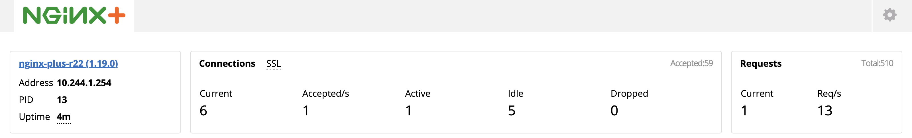

git clone https://github.com/cloudadc/container-ingress.git
cd container-ingress/nginx-plus-ingress/l4-lbL4 Load Balancing
Table of Contents
What’s this
echoserver is a simple service that provide standard internet services like time, daytime, chargen, and standard echo service. echoserver are deployed in k8a as container with multiple replicas, now need a load balancer and ingress controller to let the outside request can goes into echoserver.
Deploy Echoserver
1. Get Code
2. Deploy Echoserver
kubectl apply -f deploy.yamlthis will create a namespace named echoserver, and the echoserver service under it.
3. Test via k8s NodePort
$ telnet 192.168.5.30 30165
Trying 192.168.5.30...
Connected to 192.168.5.30.
Escape character is '^]'.
hello
kylinDeploy Ingress Controller
Either refer to Installing, or Deployment Architectures to choose one for dedetailed instructions to deploy Ingress Controller.
eg: deploy a cluster-wide nginx plus ingress controller:
// 1. deploy cluster wide nginx ingress controller
kubectl apply -f nginx-plus-ingress.yaml
// 2. deploy bigip controller
kubectl apply -f nginx-plus-ingress-svc.yaml
kubectl apply -f nginx-plus-ingress-configmap.yamlCheck the dashboard via http://192.168.5.40:8080/dashboard.html

Configure Load Balancing
We use stream-snippets ConfigMap key to configure TCP load balancing for our echoserver pods.
1. configure the load balancing
kubectl apply -f nginx-plus-config.yaml2. highlights of configmap stream-snippets
resolver kube-dns.kube-system.svc.cluster.local valid=5s;
upstream echoserver-tcp {
zone echoserver-tcp 64k;
server echoserver-svc.echoserver.svc.cluster.local service=_echoserver._tcp resolve;
}
server {
listen 8877;
proxy_pass echoserver-tcp;
status_zone echoserver-tcp;
}3. check the configuration
kubectl exec -it nginx-ingress-7fbffb7bc6-hrq7q -n nginx-ingress -- bash
$ cat /etc/nginx/nginx.conf
...
upstream echoserver-tcp {
zone echoserver-tcp 64k;
server echoserver-svc.echoserver.svc.cluster.local service=_echoserver._tcp resolve;
}
server {
listen 8877;
proxy_pass echoserver-tcp;
status_zone echoserver-tcp;
}4. Check the Nginx Plus Ingress Controller Dashboard

Note that now has one TCP/UDP zone and one TCP/UDP upstream.
5. Check the Ingress path
From the F5 LTM, there is public IP which used as unified external enterence as below figure, it’s listen on 192.168.5.40:8877

Note that the Virtual Server IP reference to 2 pool member, that because we deploy nginx plus ingress has 2 replicas.
From Nginx Plus TCP/UDP Upstreams, there only one records, the echoserver service ip is used,

Demonstrations
Either use telnet or echoclient:
telnet
$ telnet 192.168.5.40 8877
Trying 192.168.5.40...
Connected to 192.168.5.40.
Escape character is '^]'.
hello
hello
kylin
kylinechoclient
$ echoclient 192.168.5.40
daytime
Sat Aug 15 20:41:51 2020
time
1597524114
hello
hellocheck the statistics from F5

Note that the 2 connection all are established via 1st ingress controller.